Last updated: 2016-07-08
Code version: f3271c626c586079652907b55fa357b6f569fd26
Non-detection rate descriptives: We found that the median of non-detected cells rate is 26% across the three individuals and ranges between 21 to 30% between the three individuals.
Non-detection rate and Mean, Var, CV: Expectedly, gene abundance and variance were both associated with percent of non-detected cells; even genes with as low as 10 percent of non-detected cells were restricted in the dynamic range of abudance levels. Gene coefficient of variation was not correlated with percent of non-detected genes (Spearman’s correlation = .04) across the three individuals. Further analysis indicated that when including only cells with less than 50 percent of undetected cells, the gene CV decreases as a concave function of abundance, a commonly observed pattern in bulk RNA-seq data and in scRNA-seq when undetected cells are included in the analysis.
Compare non-detection rates: 1,958 genes were found to have significant differences in non-detection rates between the three individuals at false discovery rate less than .01.
Individual difference in non-detection rate and gene abundance: We found no correlation between p-values of tests comparing gene mean abundance and p-values of tests comparing non-detection rate, for all three pairiwse between-individual comparisons. The results also held when we investigated the correlation between fold change and p-value of tests comparing non-detection rate between indivdiuals. Furthermore, we evaluated genes with absolute log2 fold change greater than 1, 1.5, and 2 in the pairwise comparison tests, most genes with our nominated fold change difference were found to not have a significant difference in the proportion of non-detected cells.
*Note: I don’t trust the differential expression analysis results here. Over 95% of the genes in the overall F-test were to be significant at FDR < .01; same results were found for two of the pairwise comparisons (NA19098-NA19101, NA19098-NA19239). When looking at the fold change of gene expression, I found only a very small portion of the genes with log2 fold change more than 2; NA19098-NA19101: 5 genes, NA19098-NA19239: 4 genes, and NA19101-NA19101: 2 genes.
Note: An interesting observation when computing fold change suggests that on average gene abundance levels of NA19239 > NA19101> NA19098
library("dplyr")
library("limma")
library("edgeR")
library("ggplot2")
library("scales")
library("grid")
theme_set(theme_bw(base_size = 12))
source("functions.R")
library("Humanzee")
library("cowplot")
library("MASS")
library("matrixStats")
source("../code/cv-functions.r")
source("../code/plotting-functions.R")
library("mygene")
library("aod")We import molecule counts before standardizing and transformation and also log2-transformed counts after batch-correction. Biological variation analysis of the individuals is performed on the batch-corrected and log2-transformed counts.
# Import filtered annotations
anno_filter <- read.table("../data/annotation-filter.txt",
header = TRUE,
stringsAsFactors = FALSE)
# Import filtered molecule counts
molecules_filter <- read.table("../data/molecules-filter.txt",
header = TRUE, stringsAsFactors = FALSE)
stopifnot(NROW(anno_filter) == NCOL(molecules_filter))
# Import final processed molecule counts of endogeneous genes
molecules_final <- read.table("../data/molecules-final.txt",
header = TRUE, stringsAsFactors = FALSE)
stopifnot(NROW(anno_filter) == NCOL(molecules_final))
# Import gene symbols
gene_symbols <- read.table(file = "../data/gene-info.txt", sep = "\t",
header = TRUE, stringsAsFactors = FALSE, quote = "")
# Import cell-cycle gene list
cell_cycle_genes <- read.table("../data/cellcyclegenes.txt",
header = TRUE, sep = "\t",
stringsAsFactors = FALSE)
# Import pluripotency gene list
pluripotency_genes <- read.table("../data/pluripotency-genes.txt",
header = TRUE, sep = "\t",
stringsAsFactors = FALSE)$ToLoad gene CVs computed over all cells (link1), CV computed only over the expressed cells (link2), and differential CV results when including only the expressed cells (link3).
load("../data/cv-all-cells.rda")
load("../data/cv-expressed-cells.rda")
load("../data/permuted-pval-expressed-set1.rda")Compute a matrix of 0’s and 1’s indicating non-detected and detected cells, respectively.
molecules_expressed <- molecules_filter
molecules_expressed[which(molecules_filter > 0 , arr.ind = TRUE)] <- 1
molecules_expressed <- as.matrix((molecules_expressed))Take the gene subset included in the final data.
genes_included <- Reduce(intersect,
list(rownames(molecules_final),
rownames(expressed_cv$NA19098),
names(perm_pval_set1)) )
molecules_filter_subset <- molecules_filter[
which(rownames(molecules_filter) %in% genes_included), ]
molecules_final_subset <- molecules_final[
which(rownames(molecules_final) %in% genes_included), ]
molecules_expressed_subset <- molecules_expressed[
which(rownames(molecules_expressed) %in% genes_included), ]
molecules_final_expressed_subset <- molecules_final_subset*molecules_expressed_subset
molecules_final_expressed_subset[which(molecules_expressed_subset == 0, arr.ind = TRUE)] <- NA
permuted_pval_subset <- perm_pval_set1[which(names(perm_pval_set1) %in% genes_included)]
names(permuted_pval_subset) <- names(perm_pval_set1)[which(names(perm_pval_set1) %in% genes_included)]
expressed_cv_subset <- lapply(expressed_cv, function(x)
x[which(rownames(x) %in% genes_included), ] )
names(expressed_cv_subset) <- names(expressed_cv)
expressed_dm_subset <- expressed_dm[which(rownames(expressed_dm) %in% genes_included), , ]
dim(molecules_final_subset)[1] 13043 564dim(molecules_expressed_subset)[1] 13043 564all.equal(rownames(expressed_cv_subset$NA19098),
rownames(molecules_final_expressed_subset) )[1] TRUEall.equal(names(permuted_pval_subset),
rownames(molecules_expressed_subset) )[1] TRUECompute drop-out rates.
drop_out <- lapply(unique(anno_filter$individual), function(ind) {
temp_df <- molecules_filter_subset[,anno_filter$individual == ind]
zero_df <- array(0, dim = dim(temp_df))
rownames(zero_df) <- rownames(temp_df)
zero_df[which(temp_df == 0, arr.ind = TRUE)] <- 1
zero_count <- rowMeans(zero_df)
return(zero_count)
})
names(drop_out) <- unique(anno_filter$individual)
drop_out$all <- rowMeans(as.matrix(molecules_filter_subset) == 0)
summary(drop_out$NA19098) Min. 1st Qu. Median Mean 3rd Qu. Max.
0.00000 0.02113 0.21130 0.32060 0.59860 0.99300 summary(drop_out$NA19101) Min. 1st Qu. Median Mean 3rd Qu. Max.
0.00000 0.04975 0.29350 0.36500 0.66170 0.99500 summary(drop_out$NA19239) Min. 1st Qu. Median Mean 3rd Qu. Max.
0.00000 0.02715 0.25340 0.35060 0.65610 0.99550 summary(drop_out$all) Min. 1st Qu. Median Mean 3rd Qu. Max.
0.00000 0.03723 0.26060 0.34820 0.64540 0.93090 Histogram of drop-out percents.
par(mfrow = c(2,2))
for (i in 1:4) {
h1 <- hist(drop_out[[i]], breaks = seq(0,1, by = .1),
plot = FALSE)
h1$density <- h1$counts/sum(h1$counts)*100
plot(h1, ylab = "Percent",
xlab = "Proportion of non-detected cells",
main = names(drop_out)[i],
freq=FALSE)
}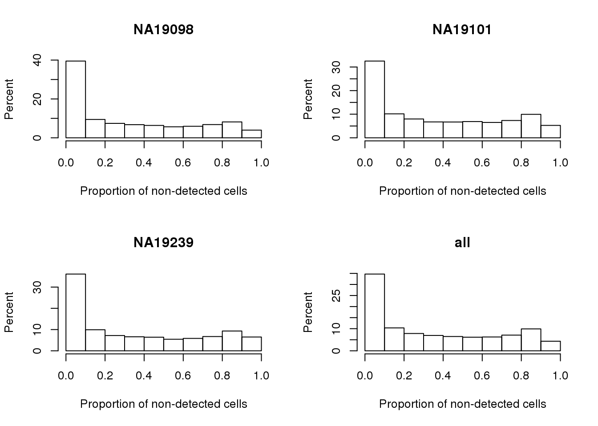
Proportion of genes with 50 percent or more undetected cells.
sapply(drop_out, function(x) mean(x>=.5)) NA19098 NA19101 NA19239 all
0.3091313 0.3592732 0.3378057 0.3384957 NA19098, expressed cells
par(mfrow = c(2,2))
plot(y = log10(expressed_cv_subset$NA19098$expr_mean),
x = drop_out$NA19098,
xlab = "Percent of drop-outs",
ylab = "log10 mean expression",
pch = 16, cex =.3)
lines(lowess( expressed_cv_subset$NA19098$expr_mean ~ drop_out$NA19098),
col = "red")
plot(y = log10(expressed_cv_subset$NA19098$expr_var),
x = drop_out$NA19098,
xlab = "Percent of drop-outs",
ylab = "log10 variance of expression",
pch = 16, cex =.3)
lines(lowess( log10(expressed_cv_subset$NA19098$expr_var) ~ drop_out$NA19098),
col = "red")
plot(y = expressed_cv_subset$NA19098$expr_cv,
x = drop_out$NA19098,
xlab = "Percent of drop-outs",
ylab = "CV",
pch = 16, cex =.3)
lines(lowess( expressed_cv_subset$NA19098$expr_cv ~ drop_out$NA19098),
col = "red")
plot(y = expressed_dm_subset$NA19098,
x = drop_out$NA19098,
xlab = "Percent of drop-outs",
ylab = "Corrected CV",
pch = 16, cex =.3)
lines(lowess( expressed_dm_subset$NA19098 ~ drop_out$NA19098),
col = "red")
title(main = "Expressed cells, NA19098", outer = TRUE, line = -1)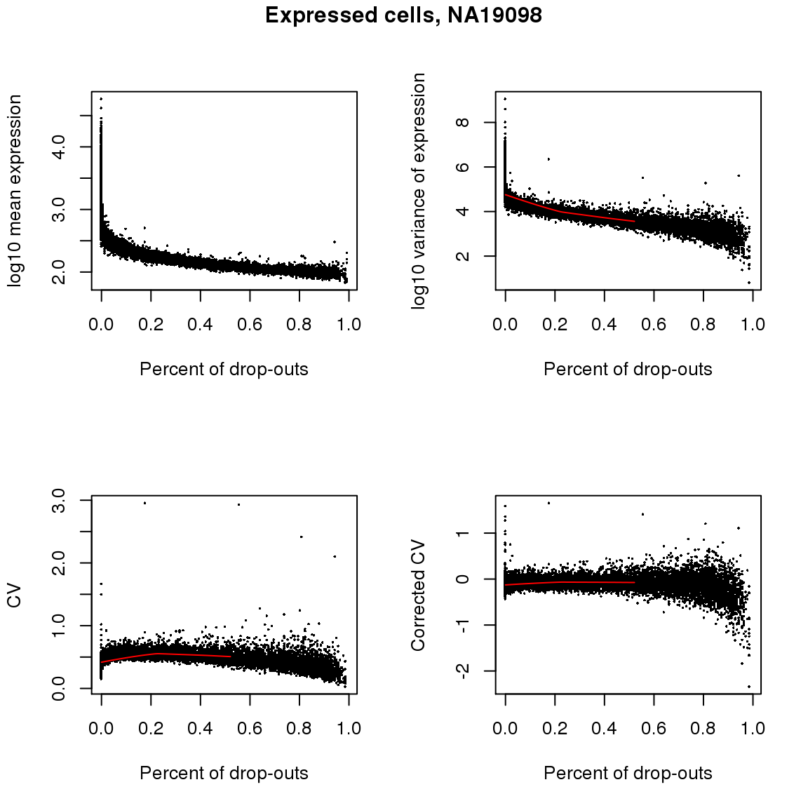
All individuals, expressed cells
par(mfrow = c(2,2))
# abundance
plot(y = log10(expressed_cv_subset$all$expr_mean),
x = drop_out$all,
xlab = "Percent of drop-outs",
ylab = "log10 mean expression",
pch = 16, cex =.3)
lines(lowess( log10(expressed_cv_subset$all$expr_mean) ~ drop_out$all),
col = "red")
# variance
plot(y = log10(expressed_cv_subset$all$expr_var),
x = drop_out$all,
xlab = "Percent of drop-outs",
ylab = "log10 variance of expression",
pch = 16, cex =.3)
lines(lowess( log10(expressed_cv_subset$all$expr_var) ~ drop_out$all),
col = "red")
# CV
plot(y = expressed_cv_subset$all$expr_cv,
x = drop_out$all,
xlab = "Percent of drop-outs",
ylab = "CV",
pch = 16, cex =.3)
lines(lowess( expressed_cv_subset$all$expr_cv ~ drop_out$all),
col = "red")
title(main = "All 3 individuals", outer = TRUE, line = -1)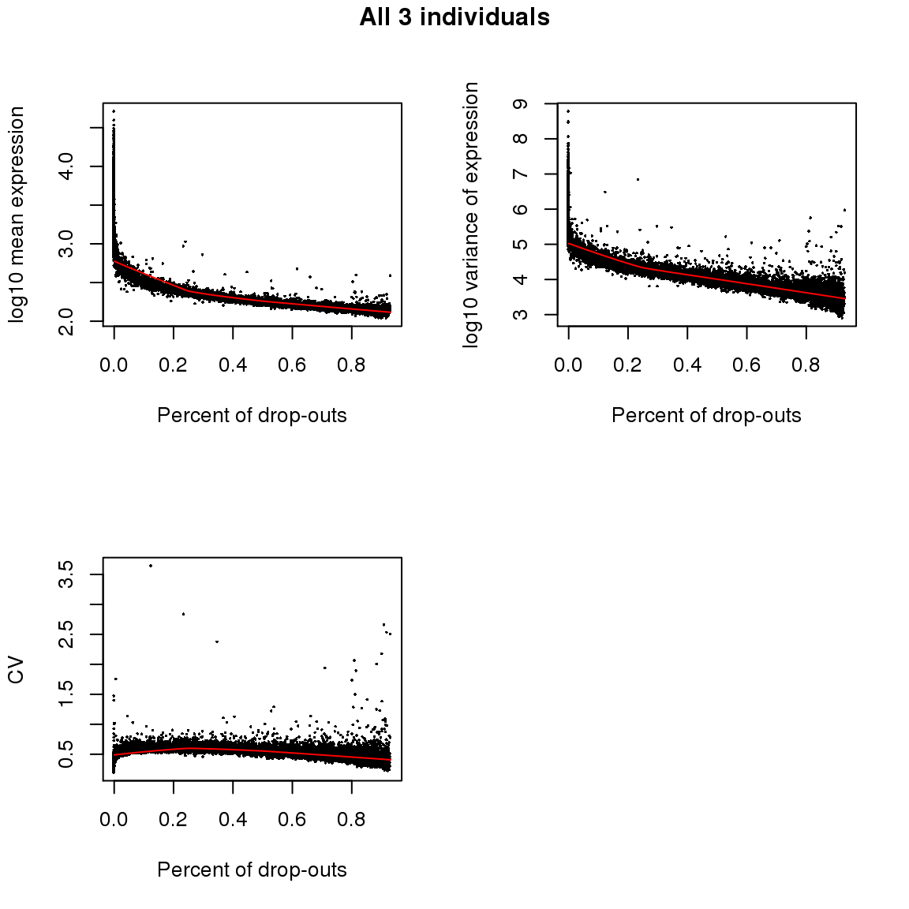
CV and mean plus drop-out rates.
par(mfrow = c(2,2))
plot(y = expressed_cv_subset$NA19098$expr_cv,
x = log10(expressed_cv_subset$NA19098$expr_mean),
cex = .9, col = alpha("grey40", .8), lwd = .6,
xlab = "log10 gene mean abundance",
ylab = "CV",
main = "Expressed cells, NA19098",
xlim = c(1,5), ylim = c(0,2.5))
points(y = expressed_cv_subset$NA19098$expr_cv,
x = log10(expressed_cv_subset$NA19098$expr_mean),
col = rev(RColorBrewer::brewer.pal(10, "RdYlBu"))[
cut(drop_out$NA19098, breaks = seq(0, 1, by = .1),
include.lowest = TRUE)],
cex = .6, pch = 16)
plot(y = expressed_cv_subset$all$expr_cv,
x = log10(expressed_cv_subset$all$expr_mean),
cex = .9, col = alpha("grey40", .8), lwd = .6,
xlab = "log10 gene mean abundance",
ylab = "CV",
main = "Expressed cells, All 3 individuals",
xlim = c(1,5), ylim = c(0,2.5))
points(y = expressed_cv_subset$all$expr_cv,
x = log10(expressed_cv_subset$all$expr_mean),
col = rev(RColorBrewer::brewer.pal(10, "RdYlBu"))[
cut(drop_out$all, breaks = seq(0, 1, by = .1),
include.lowest = TRUE)],
cex = .6, pch = 16)
plot(y = expressed_dm_subset$NA19098,
x = log10(expressed_cv_subset$NA19098$expr_mean),
cex = .9, col = alpha("grey40", .8), lwd = .6,
xlab = "log10 gene mean abundance",
ylab = "Adjusted CV",
main = "Expressed cells, NA19098",
xlim = c(1,5))
points(y = expressed_dm_subset$NA19098,
x = log10(expressed_cv_subset$NA19098$expr_mean),
col = rev(RColorBrewer::brewer.pal(10, "RdYlBu"))[
cut(drop_out$NA19098, breaks = seq(0, 1, by = .1),
include.lowest = TRUE)],
cex = .6, pch = 16)
plot(1:10, pch = 15, cex = 2, axes = F, xlab = "", ylab = "",
col = rev(RColorBrewer::brewer.pal(10, "RdYlBu")), xlim = c(0, 13))
text(labels = levels(cut(drop_out$NA19098, breaks = seq(0, 1, by = .1),
include.lowest = TRUE)),
y = 1:10, x = 1:10 + 2, cex = .7)
title(main = "drop-out rate")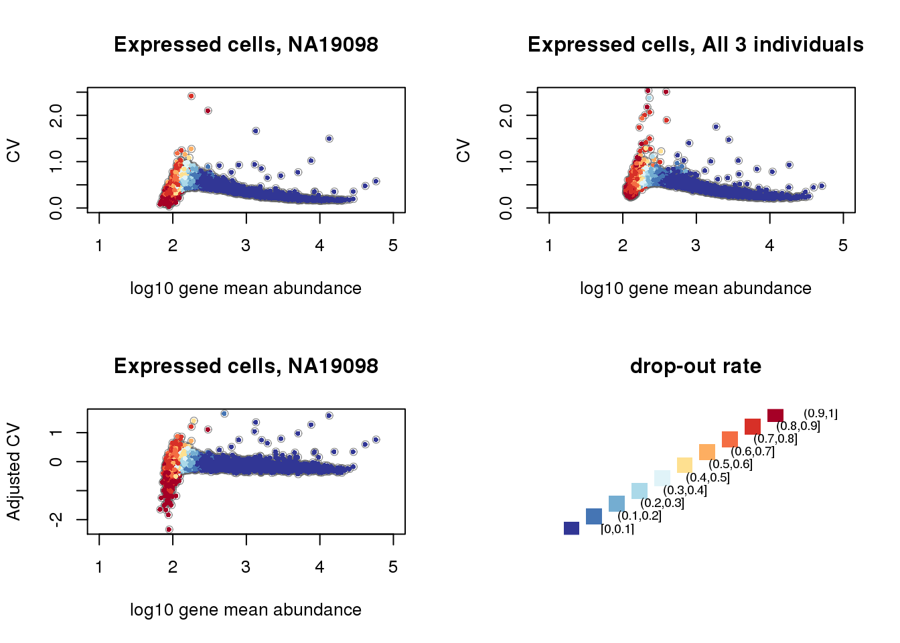
Fisher’s exact test for between individual comparisons. For some genes, we observed no undetected cells, a scenario that calls for Fisher’s exact test instead of Chi-square test or logistic regression.
file_name <- "../data/sig-test-zeros.rda"
if (file.exists(file_name)) {
load(file_name)
} else {
ind <- factor(anno_filter$individual,
levels = unique(anno_filter$individual),
labels = unique(anno_filter$individual) )
fit_zero <- do.call(rbind,
lapply(1:NROW(molecules_expressed_subset), function(ii) {
# lapply(1:100, function(ii) {
tab <- table(molecules_expressed_subset[ii, ], ind)
if (dim(tab)[1] == 1) {
if (as.numeric(rownames(tab)) == 1) {
tab <- rbind(rep(0,3), tab)
rownames(tab) <- c(0,1)
} else {
tab <- rbind(rep(1,3), tab)
rownames(tab) <- c(0,1)
}
}
pval <- lapply(rev(1:dim(tab)[2]),
function(i) {
fisher.test(tab[,-i])$p.value
})
names(pval) <- sapply(rev(1:dim(tab)[2]),
function(i) {
paste(colnames(tab[,-i])[1],
colnames(tab[,-i])[2],
sep = "-") })
df <- data.frame(
do.call(cbind, pval),
row.names = rownames(molecules_expressed_subset)[ii] )
colnames(df) <- names(pval)
return(df)
}) )
fit_zero_qval <- do.call(cbind,
lapply(1:3, function(i) {
stats::p.adjust(fit_zero[,i], method = "fdr")
}))
colnames(fit_zero_qval) <- colnames(fit_zero)
save(fit_zero, fit_zero_qval, file = file_name)
}par(mfrow = c(2,2))
for (i in 1:3) {
hist(fit_zero[,i],
main = colnames(fit_zero)[i],
xlab = "p-value")
}
title(main = "p-value histogram", outer = TRUE, line = -1)
# genes with almost 1 p-value
table(rowSums(fit_zero > .999))
0 1 2 3
8865 2188 282 1708 par(mfrow = c(2,2))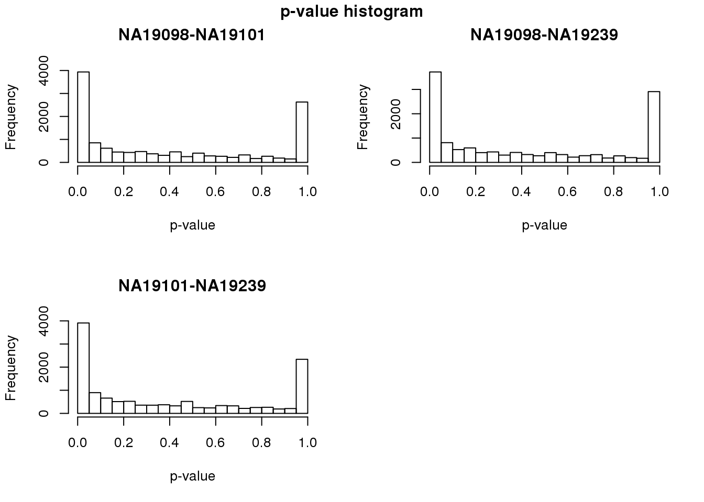
for (i in 1:3) {
plot(ecdf(fit_zero[,i]),
main = colnames(fit_zero)[i],
xlab = "p-value",
axes = F)
axis(1); axis(2)
}
title(main = "p-value empirical distribution function", outer = TRUE, line = -1)
par(mfrow = c(2,2))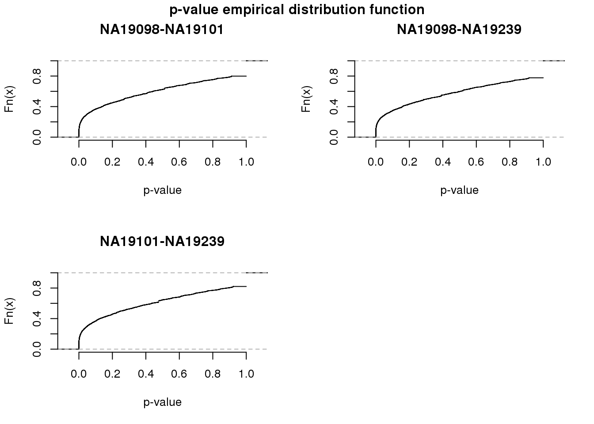
for (i in 1:3) {
plot(ecdf(fit_zero_qval[,i]),
main = colnames(fit_zero_qval)[i],
xlab = "q-value",
axes = F)
axis(1); axis(2)
}
title(main = "q-value empirical distribution function", outer = TRUE, line = -1)
table(rowSums(fit_zero_qval < .01))
0 1 2 3
9877 1746 1347 73 library(VennDiagram)
library(gridExtra)
genes <- rownames(molecules_expressed_subset)
overlap_list <- lapply(1:3, function(i)
genes[ which( fit_zero_qval[ ,i] < .01 ) ] )
names(overlap_list) <- colnames(fit_zero_qval)
grid.arrange(gTree(children = venn.diagram(overlap_list,filename = NULL,
category.names = names(overlap_list),
name = "q-val < .01")) )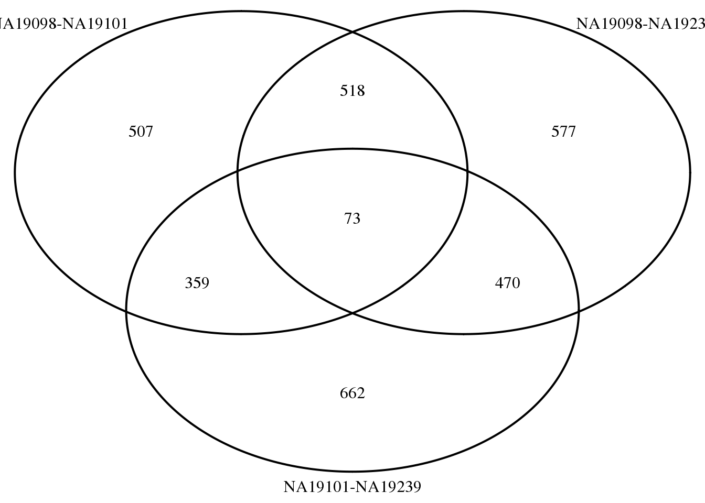
log2fc <- data.frame(
NA19098_NA19101 = rowMeans(molecules_final_expressed_subset[,anno_filter$individual == "NA19098"], na.rm = TRUE) - rowMeans(molecules_final_expressed_subset[,anno_filter$individual == "NA19101"], na.rm = TRUE),
NA19098_NA19239 = rowMeans(molecules_final_expressed_subset[,anno_filter$individual == "NA19098"], na.rm = TRUE) - rowMeans(molecules_final_expressed_subset[,anno_filter$individual == "NA19239"], na.rm = TRUE),
NA19101_NA19239 = rowMeans(molecules_final_expressed_subset[,anno_filter$individual == "NA19101"], na.rm = TRUE) - rowMeans(molecules_final_expressed_subset[,anno_filter$individual == "NA19239"], na.rm = TRUE) )
par(mfrow = c(2,2))
plot(rank(fit_zero$`NA19098-NA19101`),
rank(log2fc$NA19098_NA19101),
pch = 16, cex = .3,
xlab = "Differential non-detection rate p-value (rank)",
ylab = "log2 fold change (rank)",
main = "NA19098-NA19101")
plot(rank(fit_zero$`NA19098-NA19239`),
rank(log2fc$NA19098_NA19239),
pch = 16, cex = .3,
xlab = "Differential non-detection rate p-value (rank)",
ylab = "log2 fold change (rank)",
main = "NA19098-NA19239")
plot(rank(fit_zero$`NA19101-NA19239`),
rank(log2fc$NA19101_NA19239),
pch = 16, cex = .3,
xlab = "Differential non-detection rate p-value (rank)",
ylab = "log2 fold change (rank)",
main = "NA19101-NA19239") 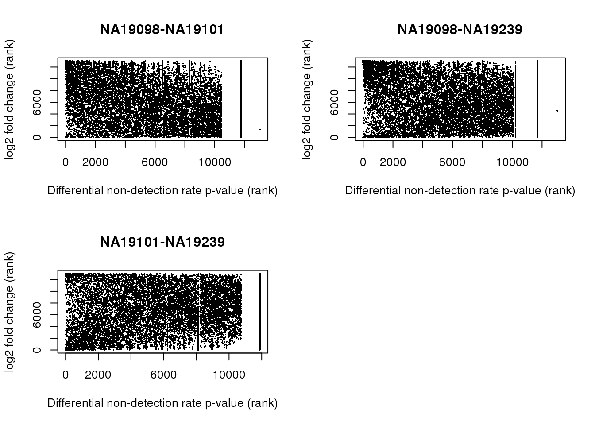
print("abs. log2 FC > 1")[1] "abs. log2 FC > 1"sapply(log2fc, function(x) sum(abs(x) > 1))NA19098_NA19101 NA19098_NA19239 NA19101_NA19239
178 164 32 library(VennDiagram)
library(gridExtra)
genes <- rownames(molecules_final_subset)
overlap_list <- lapply(1:3, function(i)
list(diffNonDetection = genes[which(fit_zero_qval[,i] < .01)],
diffAbundance = genes[ which( abs(log2fc[[i]]) > 1) ]) )
names(overlap_list) <- colnames(fit_zero_qval)
grid.arrange(gTree(children = venn.diagram(overlap_list[[1]],filename = NULL,
category.names = names(overlap_list[[1]]))),
gTree(children = venn.diagram(overlap_list[[2]],filename = NULL,
category.names = names(overlap_list[[1]]))),
gTree(children = venn.diagram(overlap_list[[3]],filename = NULL,
category.names = names(overlap_list[[3]]))),
ncol = 2)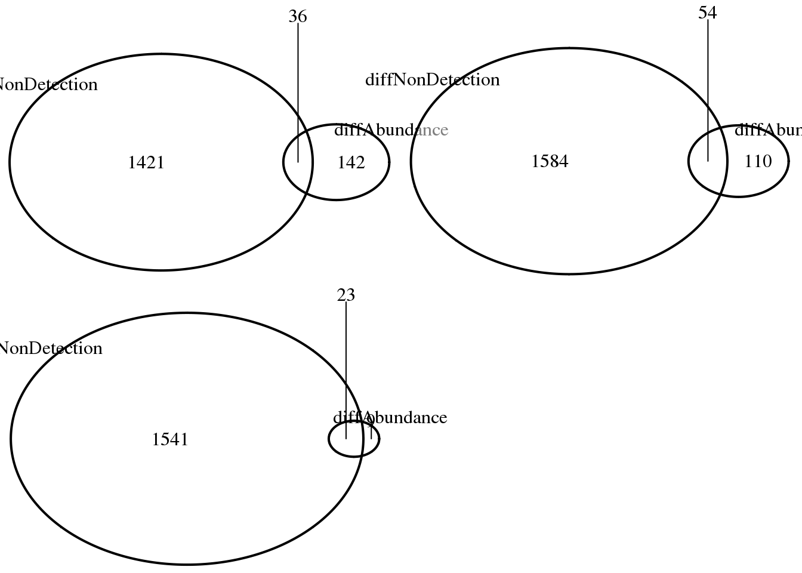
print("abs. log2 FC > 1.5")[1] "abs. log2 FC > 1.5"sapply(log2fc, function(x) sum(abs(x) > 1.5))NA19098_NA19101 NA19098_NA19239 NA19101_NA19239
12 12 10 genes <- rownames(molecules_final_subset)
overlap_list <- lapply(1:3, function(i)
list(diffNonDetection = genes[which(fit_zero_qval[,i] < .01)],
diffAbundance = genes[ which( abs(log2fc[[i]]) > 1.5) ]) )
names(overlap_list) <- colnames(fit_zero_qval)
grid.arrange(gTree(children = venn.diagram(overlap_list[[1]],filename = NULL,
category.names = names(overlap_list[[1]]))),
gTree(children = venn.diagram(overlap_list[[2]],filename = NULL,
category.names = names(overlap_list[[1]]))),
gTree(children = venn.diagram(overlap_list[[3]],filename = NULL,
category.names = names(overlap_list[[3]]))),
ncol = 2)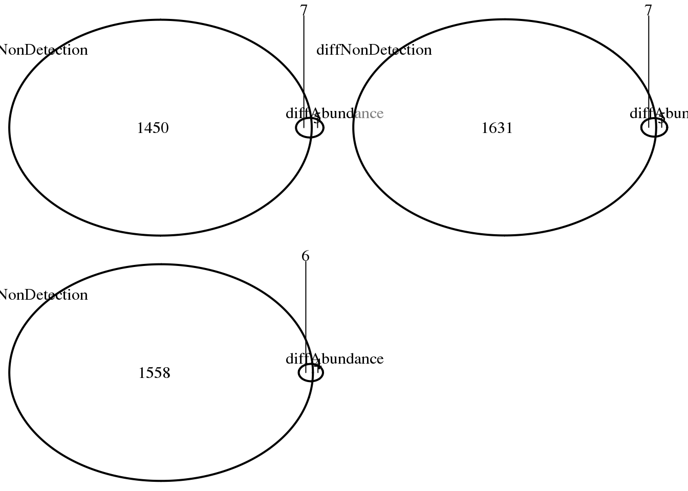
print("abs. log2 FC > 2")[1] "abs. log2 FC > 2"sapply(log2fc, function(x) sum(abs(x) > 2))NA19098_NA19101 NA19098_NA19239 NA19101_NA19239
5 6 2 genes <- rownames(molecules_final_subset)
overlap_list <- lapply(1:3, function(i)
list(diffNonDetection = genes[which(fit_zero_qval[,i] < .01)],
diffAbundance = genes[ which( abs(log2fc[[i]]) > 2) ]) )
names(overlap_list) <- colnames(fit_zero_qval)
grid.arrange(gTree(children = venn.diagram(overlap_list[[1]],filename = NULL,
category.names = names(overlap_list[[1]]))),
gTree(children = venn.diagram(overlap_list[[2]],filename = NULL,
category.names = names(overlap_list[[1]]))),
gTree(children = venn.diagram(overlap_list[[3]],filename = NULL,
category.names = names(overlap_list[[3]]))),
ncol = 2)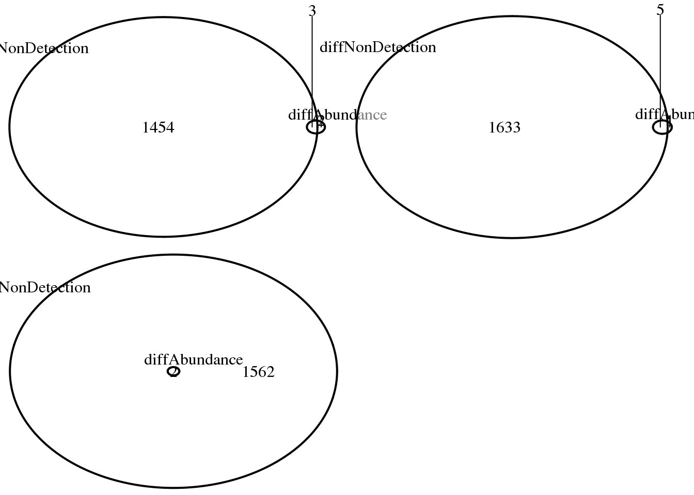
NA19098 vs. NA19101: diff non-detection,log2FC > 1.5
# genes with the largest difference in non-detection rates
gene_elect <- intersect(
rownames(fit_zero)[which(fit_zero_qval[,1] < .01)],
rownames(log2fc)[ which(abs(log2fc$NA19098_NA19101) > 1.5) ] )
par(mfrow = c(3,2))
for (i in 1:6) {
plot_density_overlay(
molecules = molecules_final_expressed_subset,
annotation = anno_filter,
which_gene = gene_elect[i],
labels = "",
xlims = c(0,15), ylims = NULL,
gene_symbols = gene_symbols)
}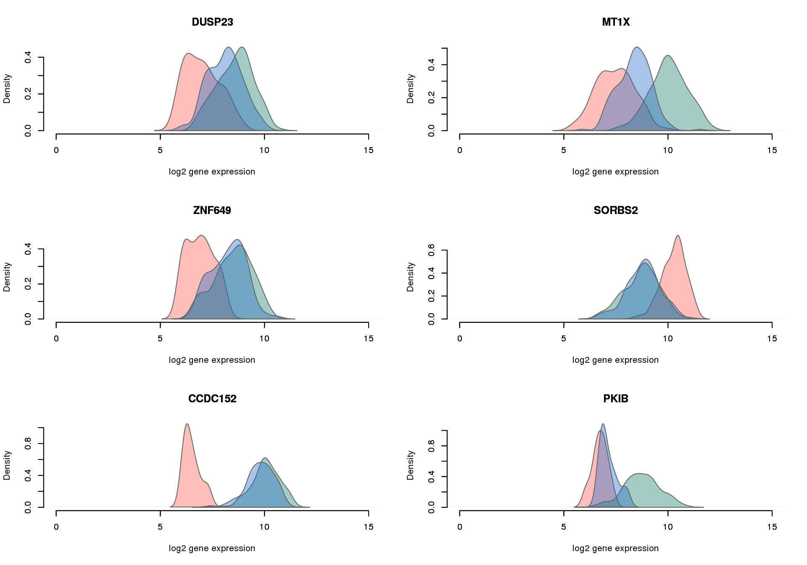
par(mfrow = c(2,2))
plot(x = rank(matrixStats::rowProds(as.matrix(fit_zero), na.rm =TRUE)),
y = rank(permuted_pval_subset),
pch = 16, cex = .3,
ylab ="Diff. CV p-value (rank)",
xlab = "Diff non-detection rate p-values product (rank)",
main = "All 3 individuals")
for (i in 1:3) {
plot(x = rank(fit_zero[,i]),
y = rank(permuted_pval_subset),
pch = 16, cex = .3,
ylab ="Diff. CV p-value (rank)",
xlab = "Diff non-detection rate p-values (rank)",
main = colnames(fit_zero)[i] )
}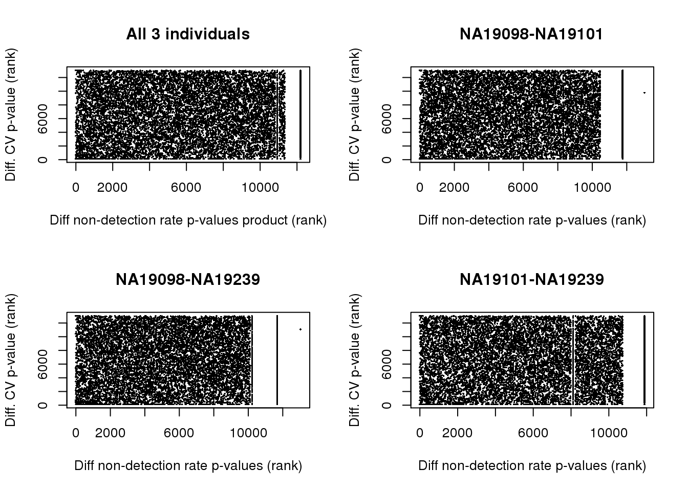
Overlap of genes with at least one significant pairwise difference in proportion of detected genes, and genes with significant differential CV.
# subset expression data of genes that were included
# in the significance testing
rownames(fit_zero_qval) <- rownames(fit_zero)
library(VennDiagram)
library(gridExtra)
overlap_list_diff <- list(
diffCV = names(permuted_pval_subset)[which(permuted_pval_subset == 0)],
diffNonDetection = rownames(fit_zero_qval)[
which(rowSums(fit_zero_qval < .01, na.rm = TRUE) > 1)
])
grid.arrange(gTree(children = venn.diagram(overlap_list_diff,filename = NULL,
category.names = names(overlap_list_diff),
name = "Diff. CV & non-detected rate")))# genes with the largest difference in non-detection rates
gene_elect <- intersect(
rownames(fit_zero)[which(rowSums(fit_zero_qval < .01, na.rm = TRUE) == 1)],
rownames(log2fc)[ which(permuted_pval_subset < .01) ] )
par(mfrow = c(3,2))
for (i in 1:6) {
plot_density_overlay(
molecules = molecules_final_expressed_subset,
annotation = anno_filter,
which_gene = gene_elect[i],
labels = "",
xlims = c(0,15), ylims = NULL,
gene_symbols = gene_symbols)
}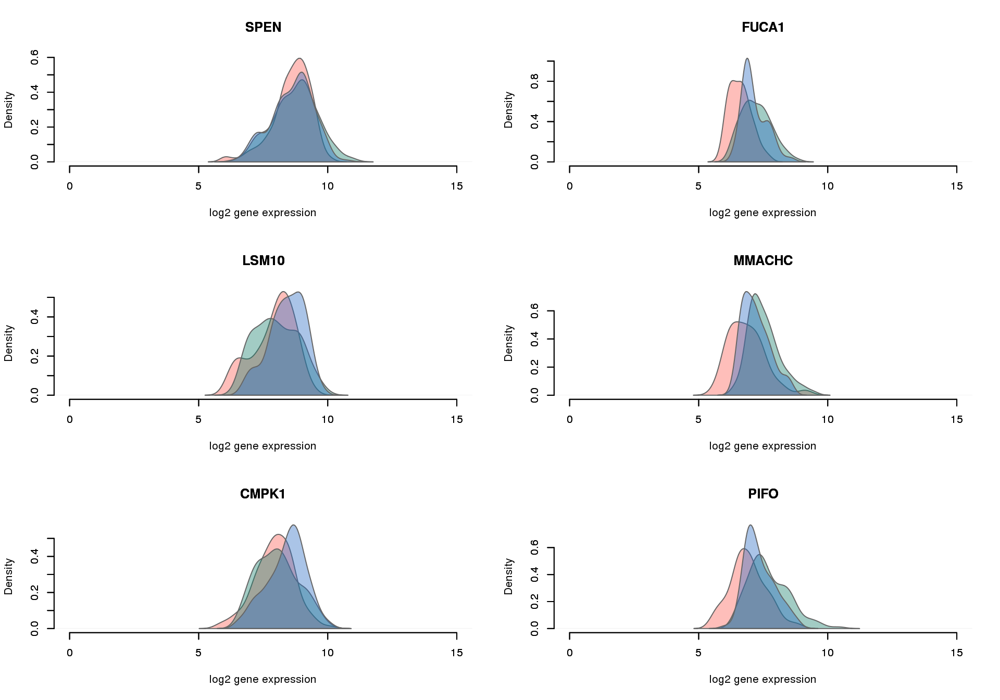
Overlap of genes with significant difference in proportion of undetected genes between all three pairs and overlap of genes with significant differential CV genes.
# subset expression data of genes that were included
# in the significance testing
rownames(fit_zero_qval) <- rownames(fit_zero)
library(VennDiagram)
library(gridExtra)
overlap_list_diff <- list(
diffCV = names(permuted_pval_subset)[which(permuted_pval_subset == 0)],
diffNonDetection = rownames(fit_zero_qval)[
which(rowSums(fit_zero_qval < .01, na.rm = TRUE) == 3)
])
grid.arrange(gTree(children = venn.diagram(overlap_list_diff,filename = NULL,
category.names = names(overlap_list_diff),
name = "Diff. CV & non-detected rate")))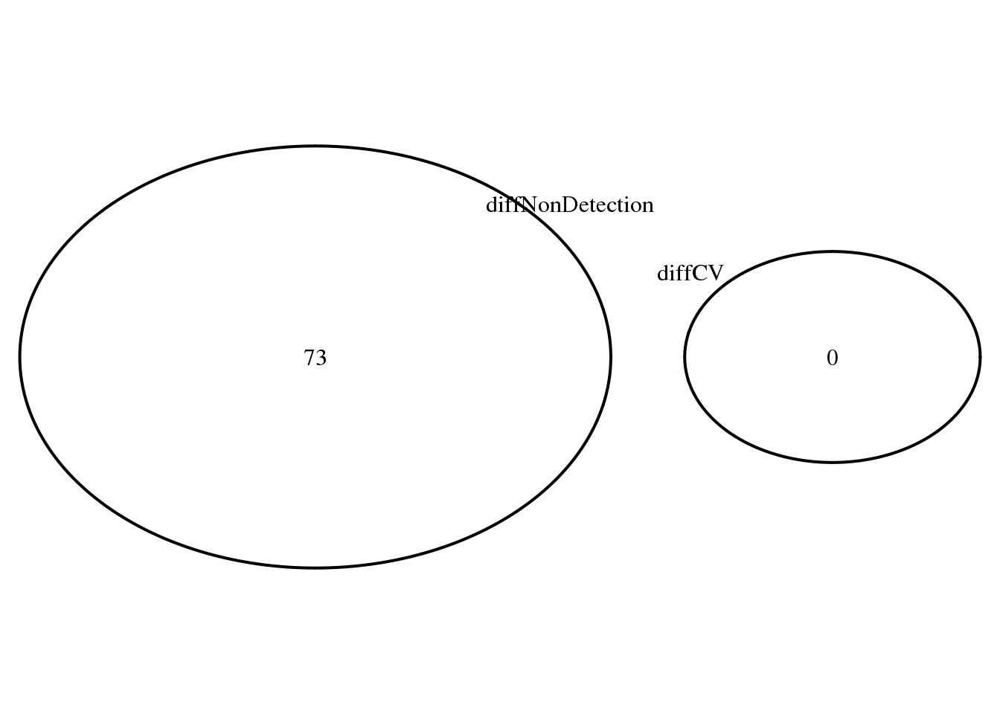
# genes with the largest difference in non-detection rates
gene_elect <- intersect(
rownames(fit_zero)[which(rowSums(fit_zero_qval < .01, na.rm = TRUE) == 3)],
rownames(log2fc)[ which(permuted_pval_subset < .01) ] )
par(mfrow = c(3,2))
for (i in 1:6) {
plot_density_overlay(
molecules = molecules_final_expressed_subset,
annotation = anno_filter,
which_gene = gene_elect[i],
labels = "",
xlims = c(0,15), ylims = NULL,
gene_symbols = gene_symbols)
}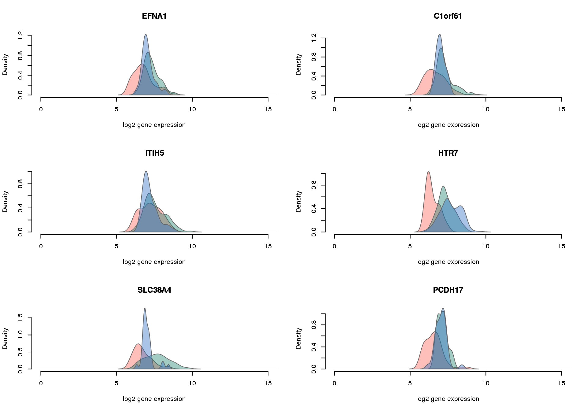
# subset expression data of genes that were included
# in the significance testing
rownames(fit_zero_qval) <- rownames(fit_zero)
library(VennDiagram)
library(gridExtra)
overlap_list_diff <- list(
difflog2FC = rownames(log2fc)[which(abs(log2fc$NA19098_NA19101) > 1)],
diffCV = names(permuted_pval_subset)[which(permuted_pval_subset == 0)],
diffNonDetection = rownames(fit_zero_qval)[
which(fit_zero_qval[,1] < .01) ] )
grid.arrange(gTree(children = venn.diagram(overlap_list_diff,filename = NULL,
category.names = names(overlap_list_diff))))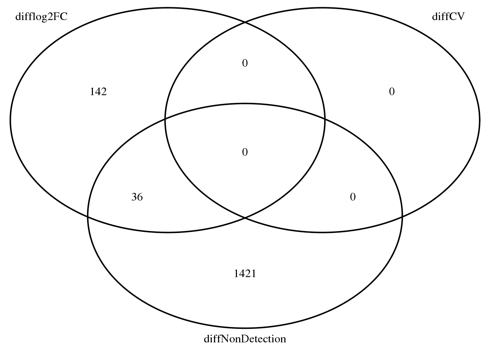
pluri <- rownames(fit_zero)[which(rownames(fit_zero) %in% pluripotency_genes)]
symbol <- gene_symbols$external_gene_name[match(pluri, gene_symbols$ensembl_gene_id)]
zero_prop <- do.call(cbind,
lapply(unique(anno_filter$individual), function(ind) {
rowMeans(molecules_expressed_subset[, anno_filter$individual == ind] == 0,
na.rm = TRUE)
}) )
colnames(zero_prop) <- unique(anno_filter$individual)
names(zero_prop) <- unique(anno_filter$individual)
summary_table <- data.frame(
gene_symbo = symbol,
diffCVpval = permuted_pval_subset[which(names(permuted_pval_subset) %in% pluripotency_genes)] < .01,
fit_zero_qval[which(rownames(fit_zero) %in% pluripotency_genes), ] < .01,
round(log2fc[which(rownames(log2fc) %in% pluripotency_genes), ], digits = 2),
round(zero_prop[which(rownames(log2fc) %in% pluripotency_genes), ], digits = 2),
stringsAsFactors = FALSE)
# The two significant CV genes
#DNMT3B
table(molecules_expressed_subset[which( rownames(molecules_expressed_subset) %in% "ENSG00000088305"), ])
1
564 summary(unlist(molecules_final_expressed_subset[which( rownames(molecules_final_expressed_subset) %in% "ENSG00000088305"), ]) ) Min. 1st Qu. Median Mean 3rd Qu. Max.
10.80 12.03 12.35 12.36 12.71 13.72 # N66A1
table(molecules_expressed_subset[which( rownames(molecules_expressed_subset) %in% "ENSG00000148200"), ])
1
564 summary(unlist(molecules_final_expressed_subset[which( rownames(molecules_final_expressed_subset) %in% "ENSG00000148200"), ]) ) Min. 1st Qu. Median Mean 3rd Qu. Max.
10.23 11.21 11.50 11.50 11.79 12.91 # NANOG
table(molecules_expressed_subset[which( rownames(molecules_expressed_subset) %in% "ENSG00000111704"), ])
0 1
125 439 summary(unlist(molecules_final_expressed_subset[which( rownames(molecules_final_expressed_subset) %in% "ENSG00000111704"), ]) ) Min. 1st Qu. Median Mean 3rd Qu. Max. NA's
5.977 7.184 7.678 7.784 8.368 10.550 125 #ZFP42
table(molecules_expressed_subset[which( rownames(molecules_expressed_subset) %in% "ENSG00000179059"), ])
0 1
1 563 summary(unlist(molecules_final_expressed_subset[which( rownames(molecules_final_expressed_subset) %in% "ENSG00000179059"), ]) ) Min. 1st Qu. Median Mean 3rd Qu. Max. NA's
6.556 9.722 10.380 10.220 10.810 11.770 1 kable(summary_table)| gene_symbo | diffCVpval | NA19098.NA19101 | NA19098.NA19239 | NA19101.NA19239 | NA19098_NA19101 | NA19098_NA19239 | NA19101_NA19239 | NA19098 | NA19101 | NA19239 | |
|---|---|---|---|---|---|---|---|---|---|---|---|
| ENSG00000187140 | FOXD3 | FALSE | FALSE | TRUE | FALSE | -0.49 | -0.10 | 0.39 | 0.30 | 0.46 | 0.53 |
| ENSG00000156574 | NODAL | FALSE | TRUE | FALSE | FALSE | -0.15 | -0.49 | -0.34 | 0.82 | 0.96 | 0.93 |
| ENSG00000171794 | UTF1 | FALSE | FALSE | TRUE | TRUE | -0.68 | -0.51 | 0.17 | 0.89 | 0.89 | 0.98 |
| ENSG00000184344 | GDF3 | FALSE | FALSE | TRUE | TRUE | -0.37 | -0.10 | 0.26 | 0.18 | 0.29 | 0.45 |
| ENSG00000111704 | NANOG | FALSE | FALSE | FALSE | TRUE | -0.84 | -0.25 | 0.58 | 0.18 | 0.13 | 0.33 |
| ENSG00000102554 | KLF5 | TRUE | FALSE | TRUE | FALSE | -0.91 | -0.41 | 0.50 | 0.99 | 0.96 | 0.87 |
| ENSG00000088305 | DNMT3B | TRUE | FALSE | FALSE | FALSE | -0.51 | 0.31 | 0.81 | 0.00 | 0.00 | 0.00 |
| ENSG00000101115 | SALL4 | TRUE | FALSE | FALSE | FALSE | -0.33 | -0.09 | 0.24 | 0.00 | 0.00 | 0.00 |
| ENSG00000163530 | DPPA2 | TRUE | TRUE | TRUE | FALSE | -0.60 | -0.41 | 0.19 | 0.67 | 0.84 | 0.89 |
| ENSG00000121570 | DPPA4 | FALSE | FALSE | FALSE | FALSE | -0.13 | -0.11 | 0.03 | 0.00 | 0.00 | 0.00 |
| ENSG00000181449 | SOX2 | FALSE | FALSE | FALSE | FALSE | -0.44 | -0.32 | 0.12 | 0.00 | 0.00 | 0.00 |
| ENSG00000179059 | ZFP42 | FALSE | FALSE | FALSE | FALSE | -1.37 | -1.34 | 0.03 | 0.01 | 0.00 | 0.00 |
| ENSG00000164362 | TERT | FALSE | FALSE | FALSE | FALSE | -0.42 | -0.18 | 0.24 | 0.62 | 0.54 | 0.58 |
| ENSG00000204531 | POU5F1 | FALSE | FALSE | FALSE | FALSE | -0.60 | -0.29 | 0.31 | 0.00 | 0.00 | 0.00 |
| ENSG00000124762 | CDKN1A | FALSE | FALSE | TRUE | TRUE | -0.38 | -0.32 | 0.06 | 0.59 | 0.60 | 0.91 |
| ENSG00000203909 | DPPA5 | FALSE | FALSE | TRUE | TRUE | -0.54 | -0.14 | 0.39 | 0.66 | 0.65 | 0.99 |
| ENSG00000128567 | PODXL | FALSE | FALSE | FALSE | FALSE | -0.46 | 0.10 | 0.56 | 0.00 | 0.00 | 0.00 |
| ENSG00000136997 | MYC | FALSE | FALSE | FALSE | TRUE | -1.07 | -0.03 | 1.04 | 0.04 | 0.03 | 0.11 |
| ENSG00000136826 | KLF4 | TRUE | FALSE | FALSE | FALSE | -0.70 | -0.78 | -0.09 | 0.96 | 0.93 | 0.86 |
| ENSG00000148200 | NR6A1 | FALSE | FALSE | FALSE | FALSE | -0.35 | -0.25 | 0.10 | 0.00 | 0.00 | 0.00 |
sessionInfo()R version 3.2.0 (2015-04-16)
Platform: x86_64-unknown-linux-gnu (64-bit)
locale:
[1] LC_CTYPE=en_US.UTF-8 LC_NUMERIC=C
[3] LC_TIME=en_US.UTF-8 LC_COLLATE=en_US.UTF-8
[5] LC_MONETARY=en_US.UTF-8 LC_MESSAGES=en_US.UTF-8
[7] LC_PAPER=en_US.UTF-8 LC_NAME=C
[9] LC_ADDRESS=C LC_TELEPHONE=C
[11] LC_MEASUREMENT=en_US.UTF-8 LC_IDENTIFICATION=C
attached base packages:
[1] stats4 parallel grid stats graphics grDevices utils
[8] datasets methods base
other attached packages:
[1] broman_0.59-5 gridExtra_2.0.0 VennDiagram_1.6.9
[4] aod_1.3 mygene_1.2.3 GenomicFeatures_1.20.1
[7] AnnotationDbi_1.30.1 Biobase_2.28.0 GenomicRanges_1.20.5
[10] GenomeInfoDb_1.4.0 IRanges_2.2.4 S4Vectors_0.6.0
[13] BiocGenerics_0.14.0 matrixStats_0.14.0 MASS_7.3-40
[16] cowplot_0.3.1 Humanzee_0.1.0 scales_0.4.0
[19] ggplot2_1.0.1 edgeR_3.10.2 limma_3.24.9
[22] dplyr_0.4.2 knitr_1.10.5
loaded via a namespace (and not attached):
[1] Rcpp_0.12.4 lattice_0.20-31
[3] Rsamtools_1.20.4 Biostrings_2.36.1
[5] assertthat_0.1 digest_0.6.8
[7] chron_2.3-45 R6_2.1.1
[9] plyr_1.8.3 futile.options_1.0.0
[11] acepack_1.3-3.3 RSQLite_1.0.0
[13] evaluate_0.7 highr_0.5
[15] sqldf_0.4-10 httr_0.6.1
[17] zlibbioc_1.14.0 rpart_4.1-9
[19] gsubfn_0.6-6 rmarkdown_0.6.1
[21] proto_0.3-10 splines_3.2.0
[23] BiocParallel_1.2.2 stringr_1.0.0
[25] foreign_0.8-63 RCurl_1.95-4.6
[27] biomaRt_2.24.0 munsell_0.4.3
[29] rtracklayer_1.28.4 htmltools_0.2.6
[31] nnet_7.3-9 Hmisc_3.16-0
[33] XML_3.98-1.2 GenomicAlignments_1.4.1
[35] bitops_1.0-6 jsonlite_0.9.16
[37] gtable_0.1.2 DBI_0.3.1
[39] magrittr_1.5 formatR_1.2
[41] stringi_1.0-1 XVector_0.8.0
[43] reshape2_1.4.1 latticeExtra_0.6-26
[45] futile.logger_1.4.1 Formula_1.2-1
[47] lambda.r_1.1.7 RColorBrewer_1.1-2
[49] tools_3.2.0 survival_2.38-1
[51] yaml_2.1.13 colorspace_1.2-6
[53] cluster_2.0.1